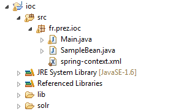
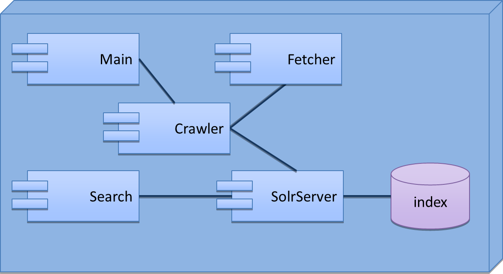
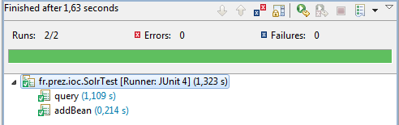

Nous allons utiliser ce template de projet afin de se familiariser avec le conteneur spring.
Le projet a été créé en utilisant le menu File > New... > java Project
Sous eclipse, le projet ressemble à l'arborescence suivante
La classe charge le contexte spring.
public class Main {
public static final void main(String[] args) {
String location = "fr/prez/ioc/spring-context.xml";
ApplicationContext context = new ClassPathXmlApplicationContext(location);
}
}
Le contexte spring fait le strict minimum afin de bénificier des options suivantes :
<?xml version="1.0" encoding="UTF-8"?> <beans ...> <context:annotation-config /> <context:component-scan base-package="fr.prez.ioc" /> <aop:aspectj-autoproxy /> </beans>
Cette classe est automatiquement instanciée par spring par la détection de composants.
@Component
public class SampleBean {
@PostConstruct
public void sayHello() {
System.out.println("Hi");
}
}
Les annotations @PostConstruct et @PreDestroy sont supportées par spring
Cela permet à notre bean de dire bonjour au démarrage de l'application.
Nous allons construire un moteur de recherche web simple.
Un moteur de recherche fonctionne en 2 temps :
Pour nous aider, nous allons utiliser les outils suivants :
Voici les composants ne sont souhaitons mettre en place.
Afin de pouvoir utiliser solr, nous allons mettre en place un serveur solr embarqué
La solution recommandée est d'installer un serveur solr indépendant (requêtes en http) mais la solution embarquée convient pour notre petit test.
La documentation de solrj, indique qu'un serveur embeddé se déclare comme suit.
// Note that the following property could be set through JVM level arguments too
System.setProperty("solr.solr.home", "/path/to/solr/home");
CoreContainer.Initializer initializer = new CoreContainer.Initializer();
CoreContainer coreContainer = initializer.initialize();
EmbeddedSolrServer server = new EmbeddedSolrServer(coreContainer, "");
Il nous suffit donc de transcrire cette configuration avec spring.
@Configuration
public class SpringConfiguration {
@Bean
public SolrServer solrServer() throws Exception {
System.setProperty("solr.solr.home", "./solr");
CoreContainer.Initializer initializer = new CoreContainer.Initializer();
CoreContainer coreContainer = initializer.initialize();
return new EmbeddedSolrServer(coreContainer, "");
}
}
Si on démarre notre application, un répertoire data se crée dans le répertoire solr.
La configuration de solr est dans le répertoire solr/conf.
La partie qui nous interesse du schema.xml et qui définit 3 champs : url, lastModified et text.
<fields> <field name="url" type="string" indexed="true" stored="true" required="true" /> <field name="last_modified" type="date" indexed="true" stored="true"/> <field name="text" type="text" indexed="true" stored="true"/> </fields>
En conséquence, nous allons créer la classe suivante, qui représente une ressource du web.
public class WebDocument {
@Field
private String url;
@Field("last_modified")
private Date lastModified;
@Field
private String text;
public String getUrl() {
return url;
}
public void setUrl(String url) {
this.url = url;
}
public Date getLastModified() {
return lastModified;
}
public void setLastModified(Date lastModified) {
this.lastModified = lastModified;
}
public String getText() {
return text;
}
public void setText(String text) {
this.text = text;
}
}
Les champs ont été annotés avec @Field afin que solrj puisse facilement ajouter ces objets dans l'index.
Nous allons vérifier que notre configuration fonctionne bien en créant un test unitaire.
On ajoute donc la classe SolrTest dans le package fr.prez.ioc du répertoire test.
@RunWith(SpringJUnit4ClassRunner.class)
@ContextConfiguration(locations = "spring-context.xml")
public class SolrTest {
@Inject
private SolrServer solrServer;
@Before
public void clear() throws Exception {
solrServer.deleteByQuery("*:*");
}
@Test
public void addBean() throws Exception {
WebDocument webDocument = new WebDocument();
webDocument.setUrl("http://monsite.fr");
webDocument.setLastModified(new Date());
webDocument.setText("some text");
solrServer.addBean(webDocument);
solrServer.commit();
}
@Test
public void query() throws Exception {
addBean();
SolrQuery query = new SolrQuery();
query.setQuery( "*:*" );
QueryResponse response = solrServer.query(query);
Assert.assertEquals(1, response.getResults().size());
Assert.assertEquals("some text",
response.getBeans(WebDocument.class).get(0).getText());
}
}
Pour ce test, nous réutilisons le contexte spring défini précédemment (spring-context.xml).
Sous eclipse, on lance un test unitaire via le menu Run > Run as > Junit Test
La seconde brique a mettre en place est la récupération des contenus.
C'est la responsabilité de la classe Fetcher qui va utiliser htmlcleaner.
En se basant sur la javadoc et sur la documentation de htmlcleaner, il faut implémenter les méthodes suivantes.
@Component
public class Fetcher {
// récupère le contenu texte de la page
public String getText(String url) throws Exception {
...
}
// récupère tous les liens dans la page
public List getLinks(String url) throws Exception {
...
}
}
La classe Crawler va utiliser le Fetcher et le SolrServer afin d'indexer les documents.
Voici une ébauche du code de crawling.
@Component
public class Crawler {
public void crawl(String url) throws Exception {
// indexer le document de présent sur l'url
// faire une pause de 50 ms
Thread.sleep(50);
// construire les liens et indexer les documents
}
}
Cet algorithme est très simple et a de multiples défauts.
La méthode suivante, par exemple, pourrait nous aider a palier à un des problème.
public boolean isInIndex(String url) throws Exception {
SolrQuery query = new SolrQuery("url:" + ClientUtils.escapeQueryChars(url));
return solrServer.query(query).getResults().getNumFound() != 0;
}
Cette liste pourrait s'étirer sur des pages avant que l'on arrive à un moteur utilisable.
Tout nos composants sont en place, il ne reste plus qu'a initialiser le crawling via la class Main.
public static final void main(String[] args) throws Exception {
String location = "fr/prez/ioc/spring-context.xml";
ApplicationContext context = new ClassPathXmlApplicationContext(location);
context.getBean(Crawler.class).crawl("http://monsite.fr");
}
Et bien sûr de créer une classe Search pour la recherche.
public class Search {
public static final void main(String[] args) throws Exception {
String location = "fr/prez/ioc/spring-context.xml";
ApplicationContext context = new ClassPathXmlApplicationContext(location);
SolrQuery query = new SolrQuery("ma query");
QueryResponse response = context.getBean(SolrServer.class).query(query);
System.out.println("Found " + response.getResults().getNumFound()
+ " documents");
for (WebDocument doc : response.getBeans(WebDocument.class)) {
System.out.println(doc.getUrl());
}
}
}
Indexation des images ? du javascript ?
Que faudrait il stoquer de plus afin de pouvoir afficher une page de résultats de recherche ?
Quel algorithme afin de tenir les documents à jour ?